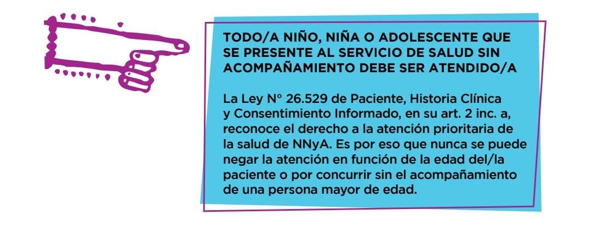

Unidad 3: El derecho a la salud.
Convenciones y leyes específicas que lo encuadran
La salud es un derecho humano fundamental. Los derechos humanos están reconocidos en diversos tratados internacionales e incorporados en la Constitución Nacional desde 1994. Estos derechos son indivisibles e interdependientes, que significa que en materia de salud no se puede garantizar la salud fisica sin garantizar la mental y social, o el tratamiento de la enfermedad y no su prevención.
Derecho a la Salud
El Estado está obligado a promover, proteger y garantizar la salud de NNYA de forma prioritaria e integral. Este derecho se encuentra reconocido en la Convención de los Derechos del Niño (art. 24), tomado por la Ley N° 26.061 (art. 14). Es por ello que se debe brindar una atención no solo interdisciplinaria sino también interinstitucional, que conecte la salud con la satisfacción de otros derechos como la educación, la vivienda, el medio ambiente sano, el acceso a los beneficios de la ciencia y la tecnología, a la información, libertad de pensamiento y expresión. Es deber del Estado garantizar el acceso a acciones de prevención, promoción, información, protección, diagnóstico precoz, tratamiento oportuno y recuperación de la salud. Por supuesto, dentro del marco del respeto de los principios generales de autonomía progresiva, participación directa, interés superior del niño y no discriminación.

La relación entre salud y desarrollo social. Desarrollo histórico de la salud pública y comunitaria, sus objetivos y campos de acción. El acceso al sistema de salud pública:
Los aportes que la salud hace al mejoramiento de la calidad de la vida de las personas contribuye al desarrollo social: repercute favorablemente en la participación activa de la comunidad en actividades vinculadas a dirigir y orientar el estilo de desarrollo posible. Además, la buena salud contribuye al crecimiento económico.
A comienzos del siglo XIX se inicia la creación de hospitales en Buenos Aires por su caudal de población. En general, la intervención del Estado en la salud fue impulsada por las epidemias y grandes catastrofes.
En la Argentina los primeros hospitales públicos surgen para atender a ex combatientes de las campañas del desierto emprendidas por Juan Manuel de Rosas.
En poco tiempo hubo una seguidilla fundacional de hospitales, dispensarios, asilos y pequeñas salas de atención, en todo el territorio nacional, orientados a solucionar los problemas de salud de los grupos de bajos recursos económicos.
Ya por 1827 los comerciantes ingleses habían establecido una precursora
Sociedad Filantrópica y a fin de siglo XIX se advierte el auge de las mutualidades, tales como Hospital Italiano, español, británico o francés.
Finalmente, en 1943 se dio el primer paso hacia el reconocimiento de la salud pública como problema de interés específico con la creación de la Dirección Nacional de Salud Pública y Asistencia Social que en 1949 se transformó en Ministerio de Salud.
Objetivos, campos de acción y acceso al sistema de salud público argentino:
- Asegurar el acceso y el uso racional de medicamentos y otras tecnologías sanitarias esenciales de calidad, seguras y eficaces
- La vigilancia en la salud pública: el control y la gestión de los riesgos para la
- Monitoreo y evaluación de la salud y el bienestar, la equidad, los determinantes sociales de la salud y el desempeño e impacto de los sistemas de salud.
- Asegurar el cumplimiento de las políticas del área para la promoción, preservación y recuperación de la salud de la población.
- Abatir las desigualdades en salud.
- Prevención de epidemias y de la propagación de enfermedades.
En Argentina el derecho a la salud es universal, todas las personas solicitantes de asilo, refugiadas y/o migrantes pueden acceder al sistema público de salud.
Por otra parte: El Estado debe garantizar el disfrute del más alto nivel posible de salud (artículo 75, inciso 22).
Rol del estado en la atención de la salud
Sistema Sanitario Argentino:
Conceptos, componentes, programas y proyectos para la atención de la salud. Articulación de atención a la salud en distintos niveles jurisdiccionales: nivel Nacional, Provincial y Municipal. Identificación de organizaciones en estos niveles.
El sistema de salud argentino En la Argentina, la provisión de la salud se implementa a través de tres sectores: el público, el privado y la seguridad social.
Desde el punto de vista institucional, el Ministerio de Salud es la máxima autoridad nacional y comparte con otras áreas del gobierno la gestación y marcha de programas sociales. Sin embargo, como nuestro país es un Estado federal, los gobiernos provinciales son autónomos respecto a las políticas de salud pública y tienen un alto grado de responsabilidad en la provisión de servicios.
Por otra parte, los municipios deben encargarse de la producción e implementación de programas y la administración de los servicios como los que se brindan en los hospitales.
El sector público está formado por una red de hospitales públicos y centros de salud y su objetivo es proveer servicios de salud en forma gratuita a toda la población.
El sistema de seguridad social es el conjunto de instituciones. Su objetivo es la protección de los trabajadores y sus familiares directos. Está formado por el régimen previsional; las obras sociales, el seguro de desempleo, el sistema de riesgos del trabajo, el PAMI y el régimen de asignaciones familiares.
El sistema privado es de ingreso voluntario: asegura desde la prevención y atención primaria de la salud, hasta las prestaciones de alta tecnología y complejidad. Es ofrecido por empresas de medicina prepaga o sanatorios, clínicas u hospitales.
Hospitales
En los hospitales se debe atender a aquellas personas que tienen alguna enfermedad o las que acuden para ser diagnosticadas. Para este diagnóstico se debe realizar análisis clínicos, radiografías, tomografías, etc.
Los hospitales cuentan con áreas específicas para diferentes necesidades sanitarias. Por ejemplo, una guardia es donde acuden los pacientes en caso de emergencias o accidentes. En la unidad de cuidados intensivos se atiende a los pacientes más graves. No obstante, también es fundamental que el hospital cuente con un equipo médico y técnico bien capacitado.
Además, se deben organizar congresos y seminarios y realizar campañas de vacunación promovidas por el Ministerio de Salud Pública.
Salas de Atención primaria Los centros médicos denominados unidades de atención primaria se encuentran ubicados en diferentes localidades de Argentina. Algunos de sus objetivos son los siguientes:
Realizar el control nutricional y odontológico. Asesorar a embarazadas y madres. Informar sobre infecciones de transmisión sexual y VIH/sida. Realizar vacunaciones.
Cooperar en la ejecución de proyectos de personas promoción, prevención y de investigación.
Promover el saneamiento ambiental. Recomendar la aplicación de medidas para evitar accidentes.
La articulación intersectorial para la atención de la salud: Organizaciones gubernamentales y no gubernamentales. Las redes locales.
La intersectorialidad es el enfoque por el cual los sistemas de salud logran trabajar con diferentes sectores y actores que les permiten impactar, de la mejor forma posible, los determinantes sociales de la salud; contribuir con actividades de desarrollo humano y lograr su potencial de equidad, La capacidad de respuesta de la APS frente al abordaje intersectorial dependerá del nivel de desarrollo del país dado y de los recursos disponibles.